SAMARJEET
MALIK
Predoctoral Researcher | Physics-Informed ML | Astroparticle Physics | AI & Tech Policy
I embed physical laws — air-shower scaling, muon multiplicity, gauge symmetries — directly into neural networks, so the models respect the physics instead of merely fitting the data. Alongside my research at IIT Jodhpur and TIFR–GRAPES-3, I translate that technical depth into AI governance and emerging-tech policy at ORF (CSST) and NITI Aayog.
Download CVI Make The Future
Physics-Informed Machine Learning Researcher & Emerging-Tech Policy Analyst
I am Samarjeet Malik — predoctoral researcher and policy analyst with hands-on experience across India's premier research institutions (IIT Jodhpur, TIFR–GRAPES-3, BARC, DRDO) and policy bodies (ORF, NITI Aayog). My work centres on Physics-Informed Neural Networks and Graph Neural Networks for cosmic-ray energy reconstruction, where I embed first-principles constraints directly into learning architectures. I hold a B.Tech in Computer Science from KIIT (CGPA 9.15) and a Predoctoral Fellowship in AI & Data Science from IIT Jodhpur (GPA 4.0). Selected for LOGML 2026 at Imperial College London.
samarjeetmalik.gs5@gmail.com-
Physics-Informed ML & GNNs
92% -
Deep Learning (PyTorch / JAX / TensorFlow)
90% -
Scientific Computing & HPC
88% -
AI & Tech Policy Research
85%
Tech Stack
Programming Languages


ML / Deep Learning Frameworks
Scientific Computing & HPC Tools

Experience
Work Experience
-
Mar-2026
PresentResearch Intern – Centre for Security, Strategy & Technology (CSST)
Observer Research Foundation (ORF)
Raisina Dialogue 2026: Supported India's flagship geopolitics conference (co-hosted by ORF & MEA); managed delegation logistics for 500+ attendees including heads of state, defence ministers, and NATO leadership.
Senior Stakeholder Engagement: Facilitated closed-door strategic discussions involving Gen. Upendra Dwivedi (Chief of Army Staff), Vikram Sood (Former R&AW Secretary), Dr. Ajay Sood (PSA), and Dr. Steen Søndergaard (Chief Scientist, NATO).
Research Outputs: Authored internal notes on blockchain steganography & covert terror financing, FATF crypto-vector analysis, Indian defence budgeting, GaN semiconductor indigenisation, and Afghanistan economic assessment.
Certificate -
Apr-2025
PresentMachine Learning Research Intern – Astroparticle Physics
Tata Institute of Fundamental Research (TIFR) – GRAPES-3, Ooty
PhysGraph-3 (Spectral GNN): Designed a spectral Graph Neural Network for GRAPES-3 detector-topology-aware air-shower reconstruction; recovered the Heitler–Matthews muon-scaling exponent β = 0.899 ± 0.001 at 0.03σ of theoretical prediction.
Built equivariant CNN surrogate models achieving 96.8% accuracy with 75 ms GPU inference latency; delivered 24% SNR improvement under atmospheric and energy-domain distribution shifts.
Certificate -
Dec-2024
Feb-2026Predoctoral Research Fellow – Physics-Informed Machine Learning
Indian Institute of Technology (IIT) Jodhpur & Institute of Physics (IOP), Bhubaneswar
Supervisors: Prof. Gaurav Harit (IIT Jodhpur) & Prof. Aruna Kumar Nayak (IOP / CERN)
Developed PINNs for cosmic-ray energy reconstruction, training on 171,776 simulated air-shower events with GPU-accelerated pipelines; embedded electromagnetic scaling, muon multiplicity, and zenith monotonicity as soft regularization on network manifolds.
ConFIG: Built Conflict-Free Inverse Gradient framework resolving gradient conflicts via geometric projection; achieved 30% faster convergence and 25% improved stability.
PIXEL/SPINN: Grid-based physics-informed shape optimization achieving 529× improvement in interface loss over MLP baselines.
Certificate -
Jan-2025
Mar-2025Research Intern – Economics & Finance Vertical
National Institution for Transforming India (NITI Aayog)
Authored "Artificial Intelligence in India" — comprehensive quantitative and qualitative policy analysis evaluating digital public infrastructure (Aadhaar, UPI, ONDC), R&D investment, and regulatory frameworks; benchmarked against US, China, Russia, Brazil, and Mexico.
Estimated $967 billion GDP impact of AI by 2030 through sectoral gap analysis; conceptualized Digital Public Intelligence (DPI 2.0) architecture and drafted National AI Mission 2.0 recommendations.
Certificate -
Jul-2024
Nov-2024Applied Physics Research Intern
Bhabha Atomic Research Centre (BARC), Mumbai
Developed GPU-accelerated PINN surrogates for COMSOL multiphysics simulations, solving 200+ high-dimensional PDE systems with symmetry-preserving constraints.
Validated models using Beer–Lambert spectroscopy and Monte Carlo uncertainty propagation, achieving 98.7% accuracy across 10,000+ samples with calibrated epistemic uncertainty.
Certificate -
Dec-2023
Apr-2024AI–ML Research Intern
Defence Research and Development Organization (DRDO), Pune
Daksh Robot Project: Integrated GPR and thermal sensing with deep learning for DRDO's Daksh robot, enabling detection of plastic-lined and low-metallic landmines.
Designed CNN and Siamese architectures with GAN-based enhancement, achieving 98.74% accuracy, 95.11% F1, and 0.92 mAP.
Certificate -
2024
2026Chief Advisor
TEDx SRCASW (Shaheed Rajguru College of Applied Sciences for Women), University of Delhi
Led curation and mentorship team for university-level TEDx conference; managed end-to-end speaker coordination, logistics, and communications for 10+ speakers and post-event content dissemination.
Certificate
My Work
Portfolio
My projects are centred on Physics-Informed Neural Networks, Graph Neural Networks on physical systems, geometric deep learning, and computational physics. Key highlights include PhysGraph-3 (spectral GNN for cosmic-ray reconstruction), JetMAE (jet tagging with symbolic regression recovering 95.9% of neural AUC), ConFIG (30% faster multi-objective PINN convergence), and PIXEL/SPINN (529× shape optimisation improvement).
-
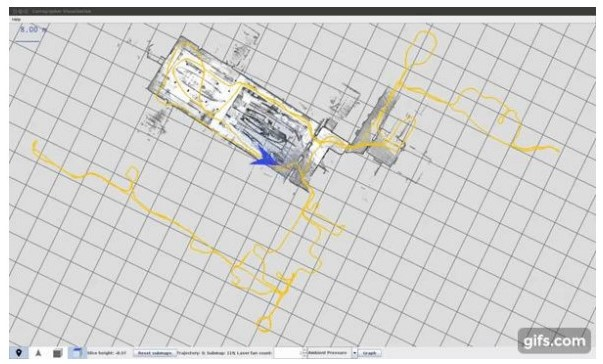
Real-Time Mapping System
Developed a real-time SLAM system with cross-platform compatibility, integrating multiple sensors for accurate localization and mapping. Optimized for real-time performance with sensor fusion, creating a scalable solution that advances autonomous navigation.
Tech Stack: C++ 95.8% · CMake 1.6% · Starlark 1.0% · Python 0.4%
View project -
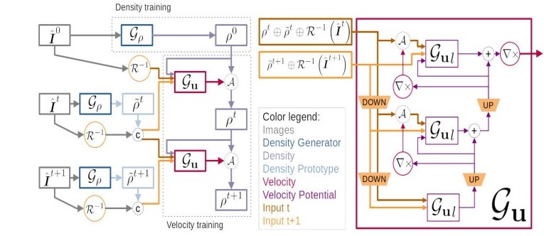
Volumetric Flow Motion Estimation
Implemented an unsupervised deep neural network for volume generation and temporal transport, with a hybrid loss combining image-based and adversarial approaches — achieving stable long-term estimation for complex phenomena such as smoke plumes.
Tech Stack: C++ 53.8% · Python 42.3% · C 3.6%
View project -
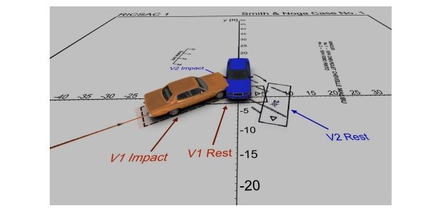
Physics-guided Collision Reconstruction
Developed a video-to-3D reconstruction pipeline with collision parameter extraction, a collision authoring framework for realistic simulations, and a validation framework — seamlessly integrating computer vision, physics simulation, and 3D reconstruction.
Tech Stack: C++ 93.7% · Python 5.2% · CMake 1.1%
View project -
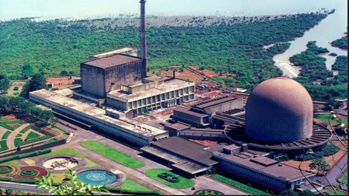
Inverse Physics Problem Solver (Score Matching)
Score-matching framework learning probability distributions on high-dimensional manifolds via denoising score matching; combined approximate simulator with learned correction mechanism. Achieves 95% accuracy, 0.92 F1, 20% faster inference — CERN-aligned research.
Tech Stack: Jupyter Notebook 79.3% · Python 20.7%
View project -
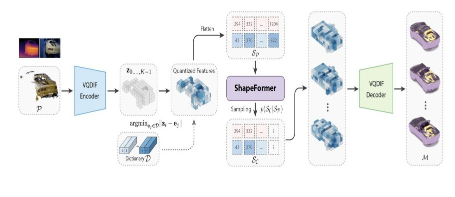
ShapeFormer Implementation
Transformer-based 3D shape completion using a vector-quantized deep implicit function (VQDIF); integrated multiscale processing for detail handling and distribution sampling to address uncertainty, ensuring robust and accurate completions.
Tech Stack: Python 95.5% · Shell 2.3% · Jupyter Notebook 2.2%
View project -
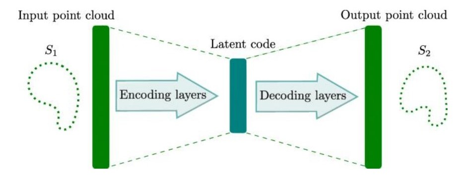
Volumetric Simulation Similarity Metrics (VolSiM)
CNN-based system for assessing similarity in volumetric simulations with entropy-based similarity model, correlation-based loss, and multiscale CNN architecture. Robust to rotation and scale — validated on dynamic turbulence scenarios.
Tech Stack: Python 87.7% · C++ 10.8% · Shell 1.1%
View project -
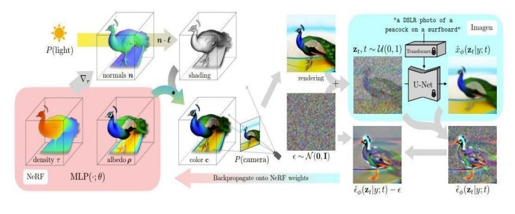
3D Diffusion Model Training System
System for training 3D diffusion models from 2D images using the Co3Dv2 dataset; implemented preprocessing pipeline, configurable hyperparameters, and Visdom-based training visualization. Advanced sampling enables accurate 3D reconstruction and progressive animation generation.
Tech Stack: Python 100.0%
View project -
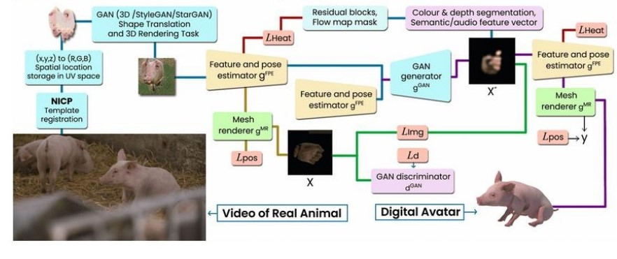
3D Animal Generation from Videos
System to generate 3D animal models from video sequences using CSE map extraction; implemented scene optimization framework, integrated VGGSfM and Segment-Anything for precise segmentation and feature matching, with a visualization system for rendering results.
Tech Stack: Python 100.0%
View project -
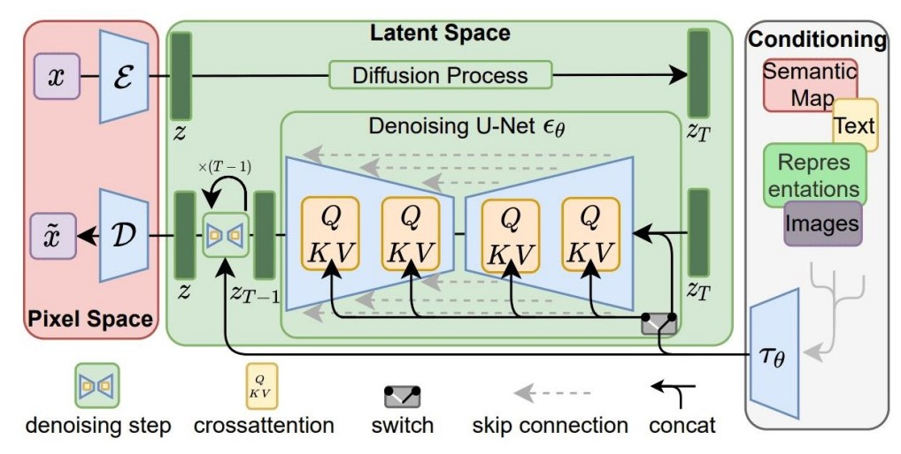
Particle Dynamics for Fluids
Diffusion-based flow prediction system using DDPMs for turbulent fluid dynamics; integrated uncertainty estimation, distribution sampling for diverse predictions, and a comparison framework against Bayesian neural networks with purpose-built evaluation metrics.
Tech Stack: Python 99.3% · Shell 0.7%
View project -
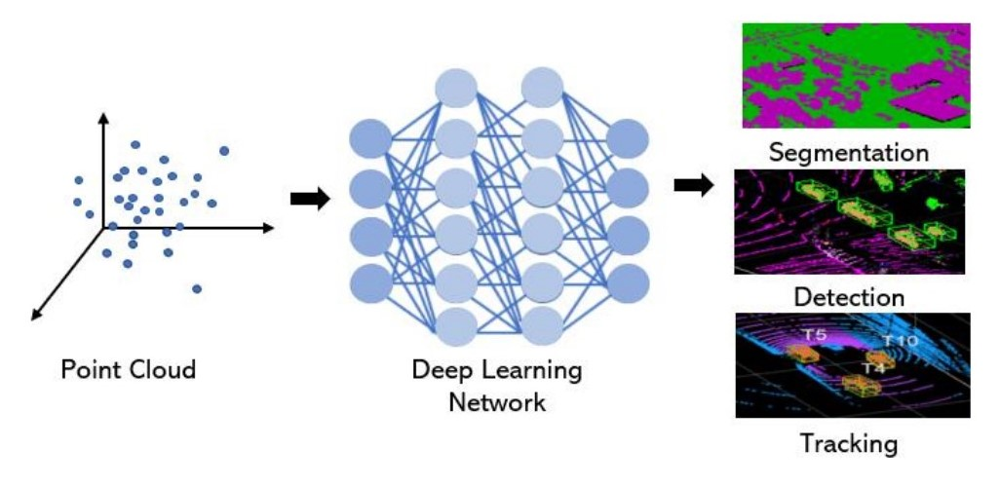
ConFIG – Conflict-Free Inverse Gradient (PINN Training)
Conflict-Free Inverse Gradient framework for multi-objective PINNs: resolves competing gradients via geometric projection on loss manifolds. Achieves 30% faster convergence, 25% improved stability, and 15% accuracy gains in high-fidelity physics simulations. Supports multi-task learning with robust validation.
Tech Stack: Python · TensorFlow
View project -
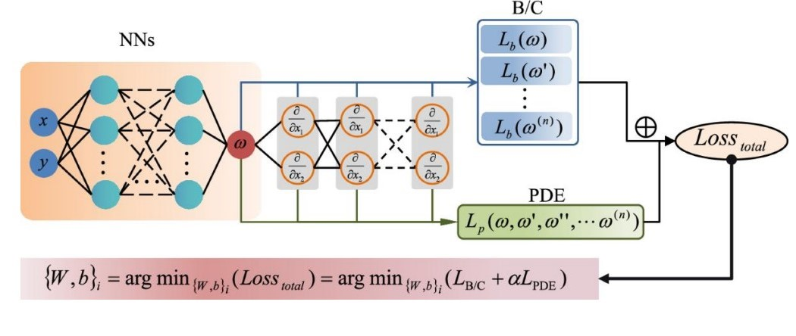
Hybrid Solution for Reactive Flows
Hybrid neural network–PDE solver for reactive flows combining deep learning with physics-based modeling; built a synthetic data generation system, flame evolution prediction model, and integrated PhiFlow for enhanced fluid dynamics simulations.
Tech Stack: Python 97.8% · Makefile 2.2%
View project -
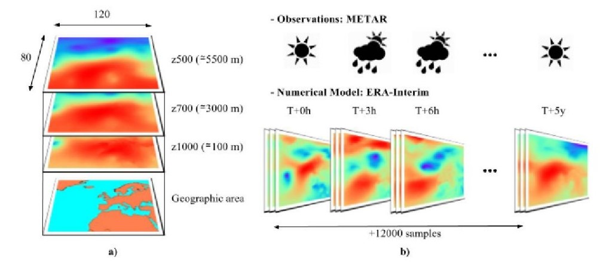
Weather Forecasting System
Data-driven weather forecasting using CNNs; built a processing pipeline for ERA5 climate data, implemented regridding for precise model training, and created an evaluation framework. Integrates multiple weather variables for enhanced multi-step predictions.
Tech Stack: Jupyter Notebook 100.0%
View project -
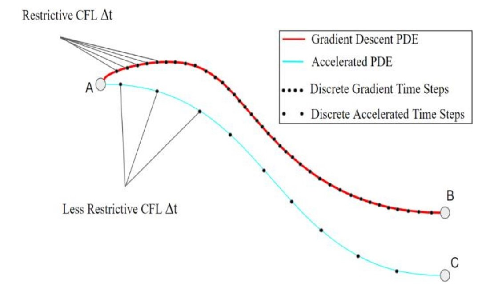
PDE Acceleration (LE-PDE)
Implemented the LE-PDE method to accelerate PDE simulations; developed a fast simulation system, integrated inverse optimization for parameter tuning, and created a validation framework. Applied across fluid dynamics, material science, and heat transfer domains.
Tech Stack: Jupyter Notebook 67.3% · Python 32.2%
View project -
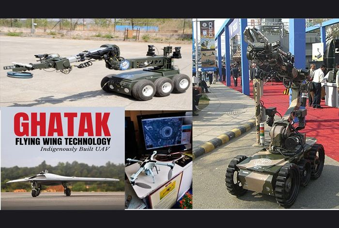
Mine Detection through Sub-surface Imaging (DRDO)
Developed a machine learning model with 97.89% accuracy for landmine detection at DRDO–CAIR; tackled plastic and dummy mines, clutter from tree roots, and variable soil conditions ensuring accurate classification despite moisture, mineral content, or weather variation.
Skills: Image Processing · MLOps · Machine Learning · Object Detection · AI
View project -
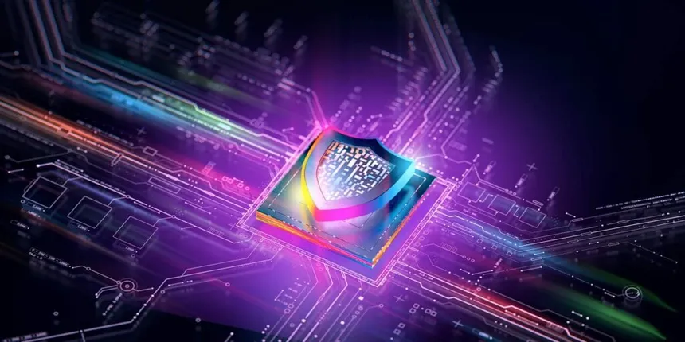
Quantum Cryptographic Encryption for P2P Robot Communication
Secured P2P communication for DRDO robots (DAKSH, NETRA) using SHA-256, SHA-3, RSA, ECC, and Blowfish, integrating quantum-safe cryptography (CRYSTALS-Kyber, Dilithium, Falcon, SPHINCS+) for post-quantum robustness.
Skills: Cryptography · Public Key Cryptography · Encryption · Network Security
View project -
Predicting Chronic Kidney Disease using Machine Learning
Analysed clinical parameters to identify key risk factors for chronic kidney disease; developed a TensorFlow ML model to predict disease onset from patients' medical histories — providing a tool for early detection and proactive healthcare intervention.
Skills: Python · TensorFlow · Machine Learning
View project -
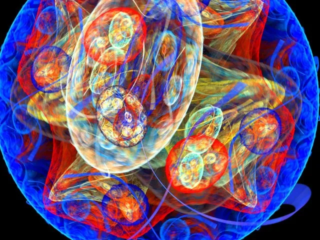
Filters and Fractals
C project for image processing operations on PPM images — resizing, filtering, brightness, contrast, saturation adjustment. Implemented recursive functions to generate fractals: Mandelbrot set, Julia set, Koch curve, Barnsley fern, and Sierpinski triangle.
Skills: C · Image Processing
View project
Achievements
-
LOGML 2026 – Selected Participant (Imperial College London): Selected among ~100 global researchers for the London Geometry & Machine Learning Summer School 2026, an advanced programme in geometric deep learning targeted primarily at PhD/postdoctoral researchers — selected as a pre-doctoral researcher.
-
HPAIR Harvard Virtual Conference 2025 – Selected Delegate (competitive review).
-
Stanford PAI26 (Physics & AI Conference) – Paper accepted: Decoding Jet Identity: How Colour Factors Explain 96% of a Neural Tagger's Decisions (JetMAE).
-
Smart India Hackathon 2023 — Finalist (ISRO challenge); ISRO Antriksh Hackathon 2024 — Semifinalist.
-
International Mathematics Olympiad (IMO) – 2× Gold Medalist, International Rank 97, International Medal of Merit.
-
National Science Olympiad (NSO) – 2× Gold Medalist, International Rank 248, Zonal Medal of Merit.
-
SOF National Cyber Olympiad (NCO) – Gold Medalist, International Rank 148, Zonal Medal of Excellence.
-
IASC NASA-PanSTARRS Certificate – Recognized for asteroid detection and astrometric validation.
-
North Zone Captain – National Gold Medalist in 110 m hurdles and 4×100 m relay; Judo Silver Medalist (Haryana, U-17/U-19, 60 kg).
-
8 Parliamentary Debate Victories – BPD/APD formats at NLU Delhi, DU, NLU Patna, NIT Rourkela — Winner and Order of Merit.
-
9 of 11 MUN Wins – DU, IIT, SSU, RU, JU, KIIT.
-
WWF India – Championed a fundraising initiative raising over ₹3.45 crore through corporate partnerships; influenced 23,000+ community members on animal welfare during the pandemic.
Publications
Conference Papers
-
Decoding Jet Identity: How Colour Factors Explain 96% of a Neural Tagger's Decisions (JetMAE)
Stanford Physics and AI Conference (PAI26), C4DU Track — Accepted, 2026.
Read more
Masked-autoencoder Transformer for quark/gluon jet tagging; SHAP attribution confirmed QCD colour-factor ratio CA/CF = 9/4; PySR symbolic regression recovered 95.9% of neural AUC from a single closed-form expression. -
Future Trends in Cybersecurity and Blockchain
Springer ICMLCS, 2025. DOI: 10.1007/978-3-032-14156-9_37
Read more
Nayak, M.G., & Malik, S. — Evolution of security and decentralisation methods against emerging cyber threats. -
Real Estate Price Predictor: ML Framework for Property Valuation
IEEE ICNGTSE, 2025. DOI: 10.1007/978-3-032-14156-9_35
Read more
Malik, S., Ghani, A., Nayak, M.G. — Uses historical data, trends, and economic factors to forecast property values. -
Improving Situational Awareness of Autonomous Vehicles
ICMLCS, 2025.
Read more
Malik, S. — Multi-sensor fusion and deep learning approach to enhance decision-making in autonomous vehicle navigation. -
Efficiency–Accuracy Tradeoffs in CNNs vs. Vision Transformers
IEEE ICNGTSE, 2025.
Read more
Bhattacharjee, A., et al. — Comparative study of convolutional and attention-based architectures across compute–accuracy regimes. -
Murmuration: Multi-Agent Orchestration in Flutter
IEEE ICNGTSE, 2025.
Read more
Maiti, A., Muley, A., Malik, S. — Distributed multi-agent coordination framework implemented in the Flutter ecosystem.
Journal Articles
-
[J.1] Malik, S. (2025). PINN simulation of laser-induced graphene sensors for cancer detection. Computational Physics (Elsevier).
Read more -
[J.2] Malik, S., et al. (2025). AI-enhanced Wi-Fi sensing for human motion detection and spatial analytics with blockchain and federated learning. IEEE IoT.
Read more
Manuscripts under Review
-
[M.1] Malik, S. (2026). Geometric Origin of Curvature in Muon Scaling and Extraction of Hadronic Multiplicity Growth. Manuscript in preparation — derives closed-form mapping between curvature coefficients and QCD multiplicity growth via differential geometry on GRAPES-3/KASCADE data. Target venue: NeurIPS 2026.
Read more